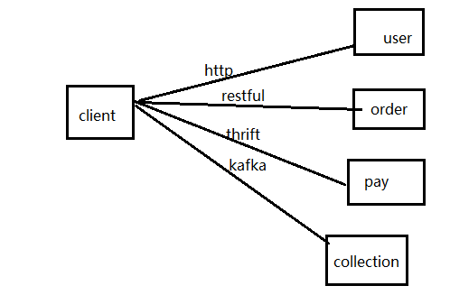
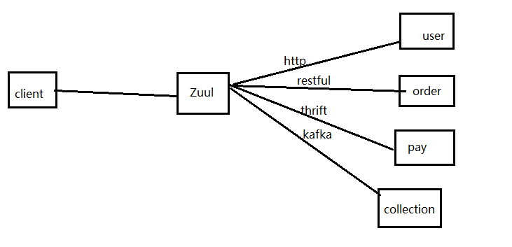

为什么要使用Zuul
先来看一下下方这个图

假如现在我们具有四个微服务，分别是用户、订单、支付、催收微服务，它们的调用方式分别是使用http、restful、thrift、kafka。这个时候如果我们在客户端直接调用的话感觉是不是太费劲了，客户端需要维护这几种调用方式的客户端，如果后期新增微服务或者减少或者更换调用方式等，都需要修改客户端。那么我们来看一下加入Zuul以后是什么样子的呢

Zuul呢就负责了所有的调用，解耦了客户端和微服务。也符合我们设计的单一职责原则。
使用Zuul
首先呢，我们在原先的父项目下新增一个cloud-demo-zuul模块，引入依赖
1 | <dependency> |
创建包cn.org.zhixiang，在此包下新建启动类CloudDemoZuulApplication
1 | @SpringBootApplication |
@EnableZuulProxy就是开启Zuul的注解
接下来看一下application.yml
1 | spring: |
这个配置其实是跟我们以往的服务消费者的配置是一样的，为什么要这样配置呢，因为在这个之前我们需要先复习一下以往的知识点，没有看过以往博客的小伙伴可以先参考这个：https://zhixiang.org.cn
首先启动我们的Eureka服务，然后启动一个提供者cloud-demo-provider。我们知道这个时候我们直接访问http://localhost:8078/user/getUser/2是可以获得数据的对吧，那么我的Zuul是怎么使用的呢。我们启动一下我们的Zuul。
这个时候我们访问http://localhost:8093/provider-demo/user/getUser/2获得的数据是一样的，也就是说我们的Zuul做了一个路由转发。我们可以看到这个url中有一个provider-demo，这个呢是提供者的spring.application.name的值，那么如果我们不想使用这个呢，比如说现在我知道这是user微服务，我就想如果访问user微服务我就使用http://localhost:8093/user/user/getUser/2怎么办呢。
配置
我们需要在yml中加上一个配置。
1 | zuul: |
这个配置呢就是把服务id为provider-demo的微服务项目地址映射为/user/.注意最后是两个，为什么是两个呢，如果是一个只能匹配/user/a,/user/b这种路径，而匹配不了/user/a/b这种。而我们配两个*的话不仅可以匹配/user/a/b,还能匹配/user/a/b/c/d等。
这个时候我们访问http://localhost:8093/user/user/getUser/2的时候就可以得到数据了。
其实还有别的写法。我们来看一下
1 | zuul: |
1 | zuul: |
上方这两种方式都是可以的，那个demo呢其实是自定义的，只要不是重复就行。然后path呢就是网页上我们访问的url。这两种方式就是分别将这哥path映射到serviceId或者一个url。
负载均衡
刚才我们探讨的一直都是单个服务的情况，那么当我们有多个微服务的时候应该怎么操作呢
1 |
|
使用这种方式以后，我们再启动一下我们原先的cloud-demo-provider-2项目，然后启动Zuul访问时会发现已经实现了负载均衡
文件上传
我们使用zuul做路由的时候可能会碰到上传文件的需求，上传小文件到是没事，但是如果大文件的话是无法上传呢，这儿呢就有一个办法来绕过SpringMVC的DispatchServlet。
例如我们上传文件的接口为http://localhost:8093/user/user/uploadFile 那么我们在上传的时候就可以访问http://localhost:8093/zuul/user/user/uploadFile来实现上传大文件
GitHub：https://github.com/2388386839/spring-cloud-demo
码云：https://gitee.com/zhixiang_blog/spring-cloud-demo
如果对您有所帮助，请记得帮忙点一个star哦